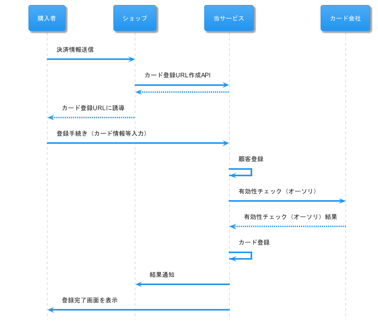
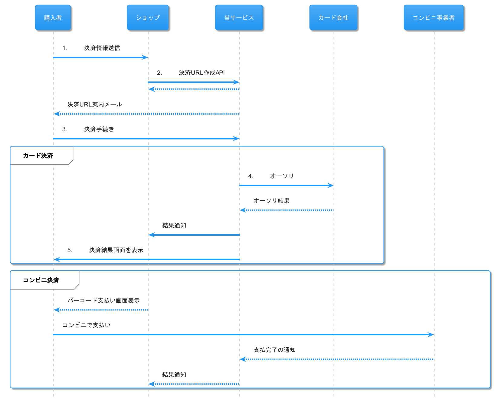
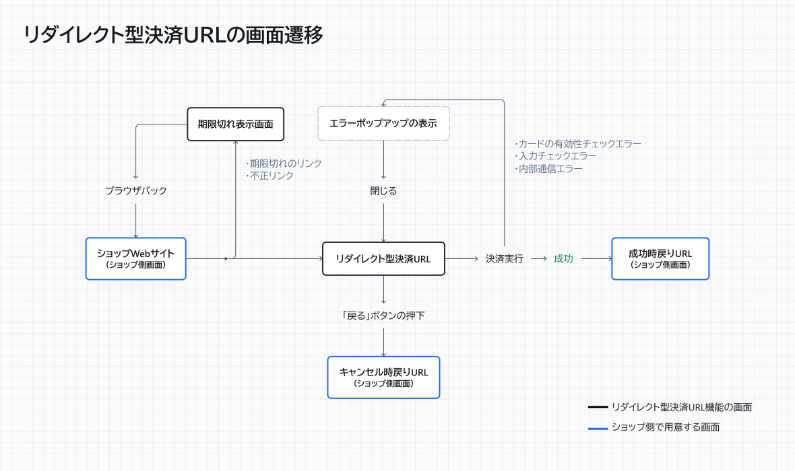
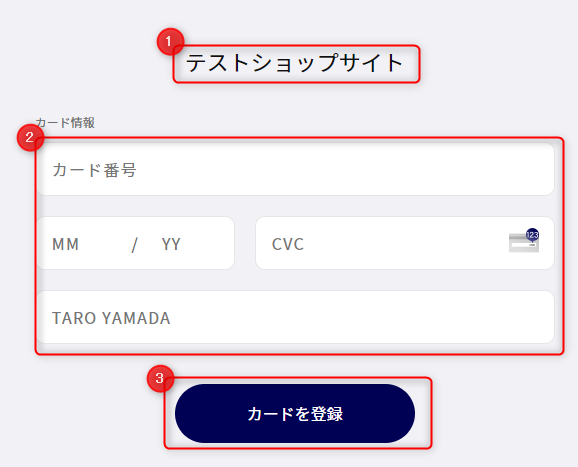
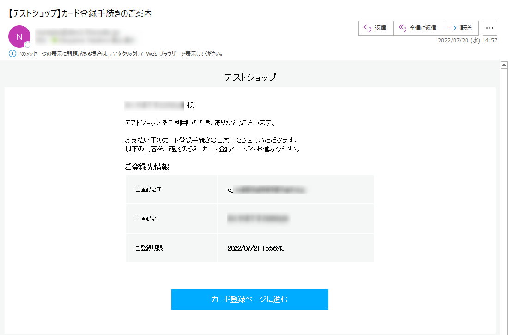
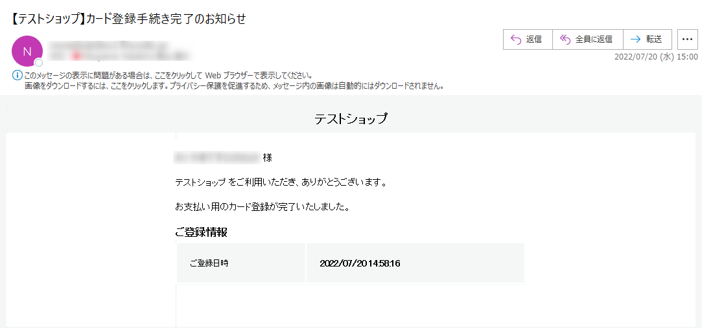

使用跳转式卡片登记
跳转式卡片登记使用 fincode 提供的支付页面登记买家的卡片信息。
商户无需自行搭建支付页面，只要引导买家访问 fincode 的卡片登记 URL 即可完成支付。
使用创建卡片登记 URL接口创建卡片登记 URL，再将买家引导至 fincode 的卡片登记页面。
也可以通过“邮件链接”功能，用电子邮件将卡片登记 URL 告知买家。
创建卡片登记 URL的详细参数请点击此处查看。
跳转式卡片登记

- 买家请求登记客户和卡片。
- 商户调用 fincode 的创建卡片登记 URL接口，并将买家跳转到
カード登録URL(link_url)。 - 买家办理登记手续，输入卡片信息。
- fincode 登记客户。
- fincode 向卡公司发起卡片有效性检查。
- 检查通过后，fincode 为该客户登记卡片。
- fincode 向买家显示登记结果页面。如果创建卡片登记 URL 时指定了成功 URL，fincode 会通过 POST 重定向到该 URL。
跳转式卡片登记（邮件链接）

- 买家请求登记客户和卡片。
- 商户调用 fincode 的创建卡片登记 URL接口，fincode 将
カード登録URL案内メール发送至宛先メールアドレス(receiver_mail)。 - 买家办理登记手续，输入卡片信息。
- fincode 登记客户。
- fincode 向卡公司发起卡片有效性检查。
- 检查通过后，fincode 为该客户登记卡片。
- fincode 向买家显示登记结果页面。如果创建邮件链接时指定了成功 URL，fincode 会通过 POST 重定向到该 URL。

跳转式页面示例

页面项目
跳转式卡片登记页面上的项目如下。
| No | 项目 | 说明 |
|---|---|---|
| 1 | 商户或服务名称 | 省略时自动显示“账单显示名称”。如果要在跳转式支付中使用其他名称，请指定所需名称。 ※买家的卡片对账单上会显示“账单显示名称”。 |
| 2 | 卡片信息输入区 | 用来输入卡片信息的表单。 卡号输入区右侧会显示相应卡组织的图标。 |
| 3 | 登记按钮 | 点击按钮后，按钮图标显示“发送中”，输入内容无法再更改。 |
邮件链接示例
使用邮件链接功能时，买家会收到如下卡片登记 URL 通知邮件和登记完成邮件。测试环境和生产环境的发件地址不同。
| 环境 | 发件邮箱地址 |
|---|---|
| 测试环境 | noreply@test.fincode.jp |
| 生产环境 | noreply@fincode.jp |

